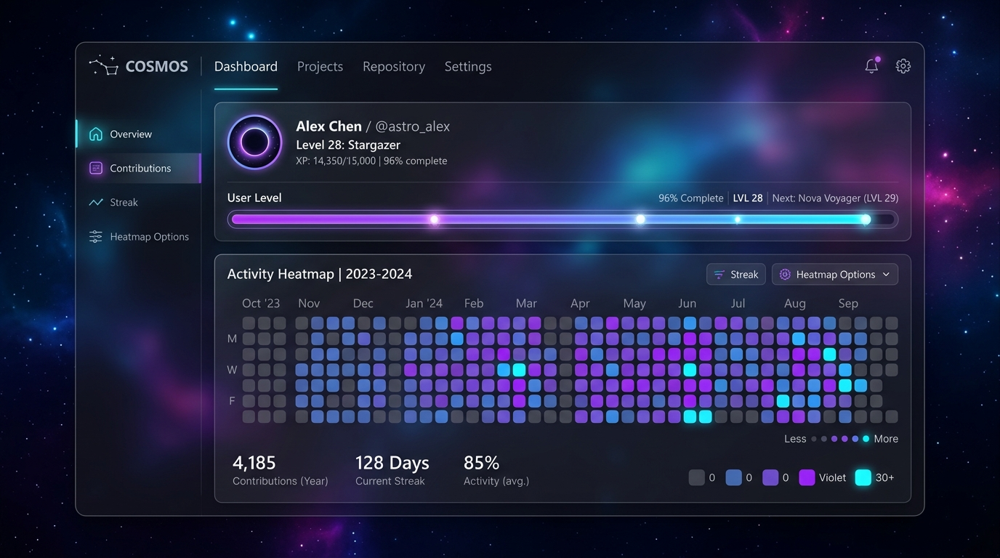
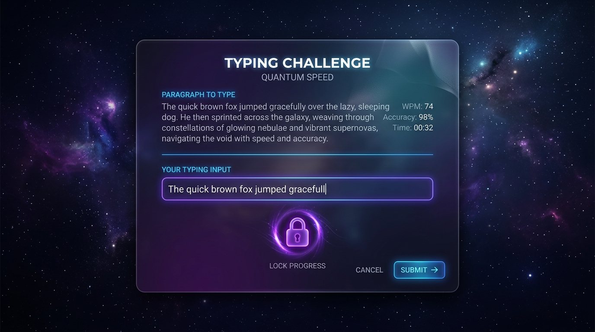
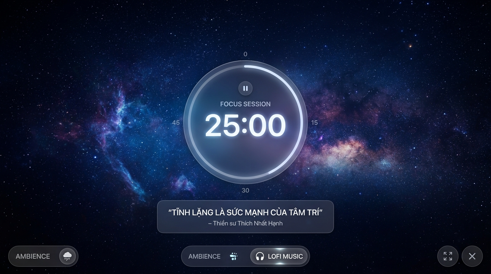

Ngăn chặn hoàn toàn sự cám dỗ. CaiNghiện can thiệp sâu vào hệ thống Windows để khóa chặt các trang web xao nhãng, ép bạn phải giữ kỷ luật và bảo vệ thời gian quý báu.

Kiến trúc đa tầng giúp triệt tiêu hoàn toàn thói quen xấu, xây dựng lại sự tập trung qua từng ngày.
Thiết lập khung giờ làm việc. Hệ thống sẽ tự động đổi DNS và ghi đè file Hosts để cắt đứt mạng xã hội mà không cần bạn phải thao tác.
Muốn tắt app? Bạn bắt buộc phải gõ chính xác 100% một đoạn văn cam kết để cơn bốc đồng tiết Dopamine kịp hạ nhiệt.
Nếu dùng Task Manager ép buộc tắt app, toàn bộ Cấp độ (Level) và Chuỗi ngày (Streak) của bạn sẽ lập tức bị xóa sạch về con số 0.
Quy trình hủy bỏ kỷ luật không còn dễ dàng bằng một cú click. Giao diện Mindfulness yêu cầu sự tập trung tuyệt đối để nhập đoạn văn bản, buộc bạn phải suy nghĩ lại quyết định của mình.


Đẩy giới hạn kỷ luật lên mức cao nhất. Chế độ Focus Room chiếm toàn quyền màn hình của bạn, ẩn thanh Taskbar và áp dụng khóa cấp thấp (Low-level Windows Hook).
Cài đặt CaiNghiện ngay hôm nay để bảo vệ sự tập trung của bạn khỏi thế giới đầy xao nhãng.